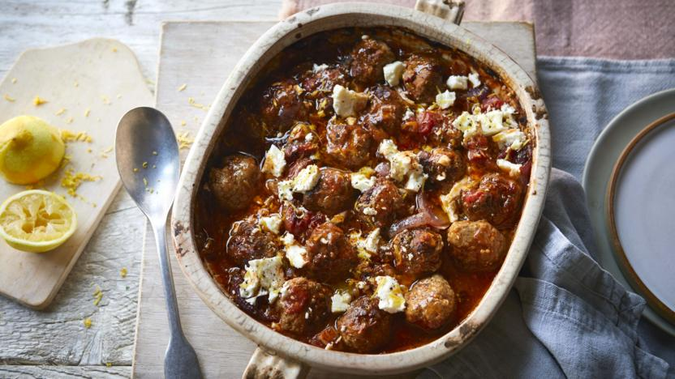

Marvellous Meatballs

This looks nicer
An all-in-one traybake makes a great family dinner. Packed with flavour, this Greek-style meatball bake freezes well and is perfect for batch cooking.
Ingredients
- 500g/1lb 2oz lamb mince or beef mince, or a mix of both
- 1 slice bread, whizzed or grated into crumbs
- ½ tbsp dried mint
- 1½ tbsp dried oregano
- 2 large red onions, cut into chunks
- 3 tbsp olive oil
- 1 lemon
- 2 x 400g tins chopped tomatoes
- 1 tbsp granulated or caster sugar, or natural sweetener such as xylitol or agave syrup
- ½ tsp ground allspice or cinnamon
- salt and freshly ground black pepper
- cooked rice or couscous, to serve
Steps
- Preheat the oven to 220C/200C Fan/Gas 7. Put the mince, breadcrumbs, mint, ½ tablespoon of the oregano and ½ teaspoon of freshly ground black pepper in a mixing bowl. Finely crumble in 75g/2¾oz of the feta, then use your hands to squish the ingredients together until well blended. (This will help the mince become tender, too.) Roll the mixture into 20–25 small meatballs.
- Put the meatballs and onion chunks into a roasting tin in which they will fit snugly in a single layer. Drizzle over the olive oil, give the tin a good shake, then roast for 10 minutes.
- Give the tin another shake to release any stuck meatballs, then turn each one over and roast for a further 10 minutes, until the meatballs are browned.
- Zest the lemon and keep the zest fresh for serving by wrapping it in a piece of damp kitchen paper. Juice the lemon and mix the juice with the tomatoes, sugar or sweetener, the remaining dried oregano and the allspice or cinnamon. Use 200ml/7fl oz water to swill out the tomato tins and stir this in too. Pour the tomato sauce all over the meatballs and onions, turn the oven down to 200C/180C Fan/Gas 6 and bake for 35 minutes more.
- Check the meatballs are cooked through and the sauce has thickened. Season to taste. To serve, spoon the meatballs over rice or couscous, crumble over the remaining feta and sprinkle with the lemon zest.
Back